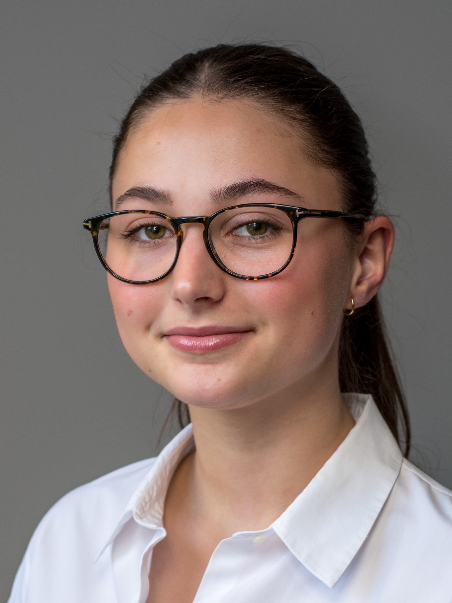

Hello, I'm Camille!

I am a first-year student at ESSEC Global BBA.
I am actively looking for a 3-month internship (May-August) in a marketing/sales team.
I would be happy to bring my creativity, my curiosity, my sense of detail and aesthetics in addition to my first knowledge in marketing.
Fluent in English, I would be able to interact within international teams.
Cosmetics.
I've been paying attention to the cosmetics sector for several years now, and I've seen its markets transform more and more rapidly (E-commerce, V-commerce, omnichannel distribution, multiplication of niche brands, "clean" active ingredients, etc.).
In light of my readings, meetings and first internships, it seems to me that the current marketing concerns of the beauty market are of three levels:
‣ the customer experience especially in the context of the digital revolution and thus the adaptation to the Covid pandemic ;
‣ the impact of cosmetic products on both the environment and consumer health;
‣ the evolution of beauty criteria and standards, the "embrace your difference" mentality with genderlessness, the LGBTQ+ community, bodypositivism, ...


Marketing.
I am also very interested in Marketing.
I was able to discover the marketing and communication jobs when I chose to be part of the "mini-company" project in my high school.
Following this experience, I chose to attend a business school to learn the profession and possibly end up specializing in marketing.
Experience.
Communication/Trade Sell-out & Laboratory Department | By Terry (June 2018)
‣ Analysis of brand's presence on social media
‣ French to English translations
‣ Preparation of sales packages
‣ Preparation of samples in the laboratory.
Marketing and Communication Manager | Mini-Enterprise (2017-2018)
> Creation of a mini-company for the commercialisation of anti-waves card protectors
‣ Management of the Marketing and Communication team
‣ Supervision of the creation of flyers and the website
‣ Participation in the regional mini-company fair
‣ Sales
Intern | Nocibé (April 2018)
‣ Putting forward products on promotion
‣ Welcoming and advising customers
‣ Restocking the shelves
Degrees and Diplomas.
Introduction to Public Speaking | University of Washington - Dr. Matt McGarrity
IELTS | Score 7 / Level C1 (Proficient User)
LanguageCert | C1 Expert
Cambridge Assessment English | 175 (B2)
Volunteer Experience.
Two years in a row (2017 & 2018), I decided to volunteer in Lourdes, France. I had the opportunity to help a pilgrim during its pilgrimage for a week.
Hobbies.
On a personal note, I enjoy music very much.
I have been dancing for many years and I play several instruments (piano and ukulele).
I also did a few years of theater. I also like photography and cinema.